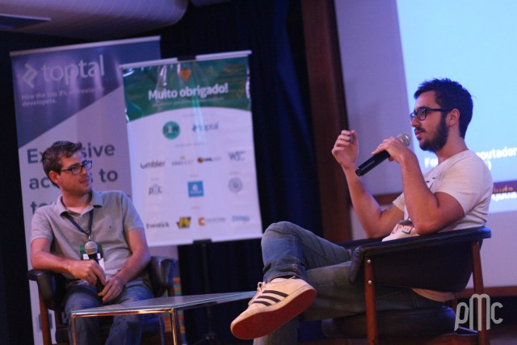
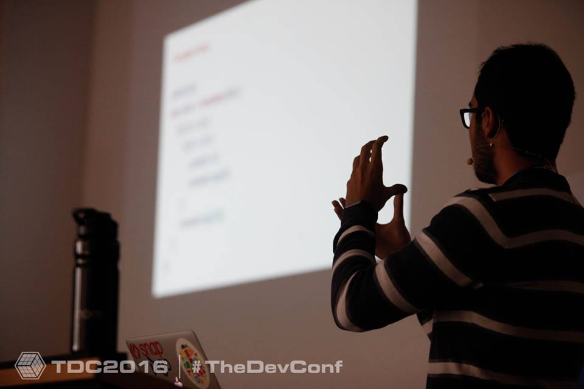

Olá!
Meu nome é Matheus Lima e eu atualmente sou o JavaScript Lead Developer na Concrete Solutions.
Comecei com Ruby e sou o fundador do RubyJobs, mas fiquei fascinado com a revolução que vem ocorrendo no mundo JavaScript.
Escrevo sobre Programação Funcional e JavaScript no meu blog, realizo video-aulas no JSCasts e organizo uma newsletter semanal de JavaScript.
JSCasts
Sabemos como é difícil encontrar conteúdo bom e atualizado em português, ainda mais no ecossistema do JavaScript.
Pensando nisso criei o JSCasts que vem justamente para suprir essa demanda cada vez maior.
Cursos:
Blog
Introdução aos Progressive Web Apps - Feb 1
Retrospectiva 2016: Aprendizados, Posts, JSCasts, Palestras e mais! - Dec 15
Webpack para React: o Guia Final - Dec 7
Organizando uma aplicação com React - Oct 5
Programação Funcional Avançada: Monads em JavaScript - Aug 24
Como construir a sua primeira aplicação com Elm — Parte 2 - Jun 7
Como construir a sua primeira aplicação com Elm — Parte 1 - Jun 1
Elm: Programação Funcional no Front-End do jeito certo - May 19
O Guia do ES6: TUDO que você precisa saber - Mar 21
Entendendo Programação Funcional em JavaScript de uma vez - Mar 3
O que TODO desenvolvedor JavaScript precisa saber - Jan 26
AngularJS do jeito certo: uma abordagem pensando em Angular 2 - Dec 1
Perfis de Acesso com AngularJS - Nov 9
Como criar um projeto Open Source em JavaScript - Oct 16
Tudo que rolou na BrazilJS - Aug 25
Como trabalhar com AngularJS - O Guia Absolutamente Completo - Jul 21
Talks
Front-End Carioca 2016 | Rio de Janeiro
TDC 2016 | Florianópolis
RSJS 2016 | Porto Alegre
Concrete Solutions
AngularJS Hack Night